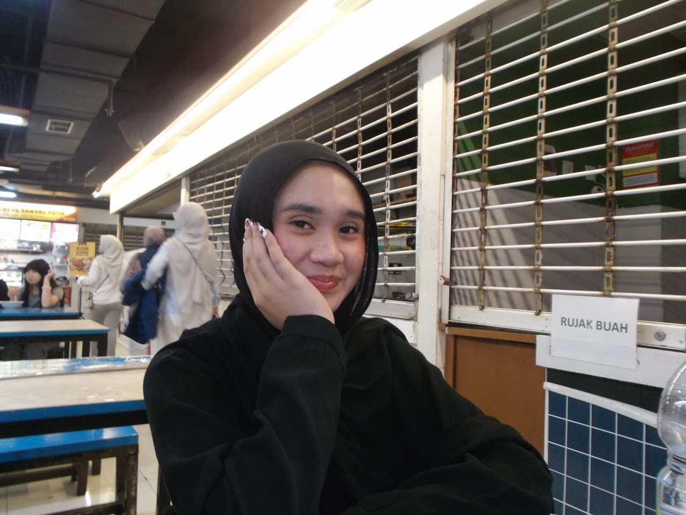

Budi Luhur University
S1 Sistem Informasi
CURRICULUM VITAE / PORTFOLIO
Saya adalah pribadi yang kreatif, komunikatif, dan senang mempelajari hal baru. Saya tertarik pada dunia musik, komunikasi, serta pengembangan ide menjadi karya yang bermakna.
Kenali saya lebih lanjut
Curious mind. Thoughtful work.
01 / 0401 — ABOUT ME
Nama saya Jasmine Kanza Sekarningtyas. Saya Mahasiswa S1 Program Studi Sistem Informasi dari Universitas Budi Luhur yang memiliki kemampuan komunikasi yang baik, bertanggung jawab, serta mampu bekerja sama dalam tim maupun secara individu. Aktif berorgranisasi mengikuti Himpunan Mahasiswa di kampus, Selama saya mengikuti organisasi saya memasuki divisi PR(Public Realition) yang dimana saya menjadi team konten untuk membuat konten dan mencari ide konten. Seseorang memiliki pengetahuan luas dalam bidang Social.
02 — EDUCATION
S1 Sistem Informasi
03 — EXPERIENCE
Berpartisipasi dalam kegiatan kewirausahaan sekolah dengan merencanakan,mempromosikan, dan menjual produk kepada konsumen.
Anggota HIMASI
Mengikuti salah satu event besar yaitu SI Fest 2025 yang diselenggarakan di Universitas Budi Luhur menjadi volunteer dan berkontribusi dalam perencanaan serta pelaksanaan acara bekerja sama dengan tim untuk mengelola kegiatan, berkoordinasi dengan peserta, dan mendukung kesuksesan acara.
04 — WHAT I DO
Menngedit video konten yang menarik
Mengedit foto feeds dicanva
Kolaborasi dan koordinasi.
Word, Excel, dan PowerPoint.
LET'S CONNECT